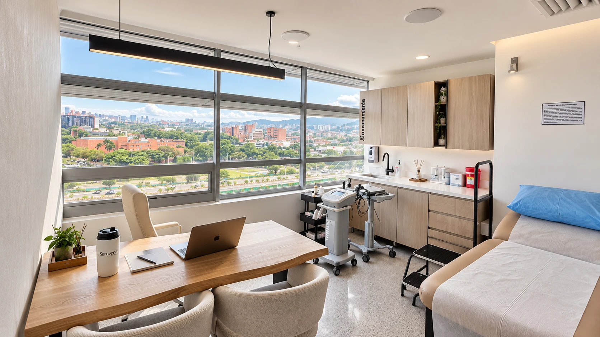

Várices por EPS o particular: diferencias reales en Colombia
Si ya notas las venas más marcadas y dudas entre esperar la cita de tu EPS o buscar una consulta particular, esta es la diferencia real entre las dos vías en Colombia, sin prometerte coberturas ni plazos que no te podemos garantizar.

Ya llamaste a tu EPS, te dieron una cita lejana y ahora buscas várices por EPS o particular para ver si hay otro camino. Pasa todos los días, en Medellín y en el resto de Colombia. No hay una respuesta que sirva para todas: depende de qué tan rápido necesitas resolverlo y de cuánta espera estás dispuesta a aguantar.
Qué cubre tu EPS si tienes várices
En Colombia, toda EPS debe garantizar el Plan de Beneficios en Salud (PBS, antes POS): consulta médica general, consulta con especialista y los procedimientos médicamente necesarios según el marco que actualiza el Ministerio de Salud. Eso en el papel suena claro, pero en la práctica tu caso pasa primero por una valoración de tu médico general, que decide si te remite a especialista vascular y qué estudios pide.
Lo que no te podemos decir, porque no lo gestionamos, es qué tan rápido avanza ese proceso en tu EPS específica ni qué procedimiento exacto te van a autorizar: eso lo define cada EPS caso por caso. Si alguien te promete por internet un porcentaje de cobertura o un tiempo exacto sin conocer tu EPS ni tu ciudad, tómalo con cuidado.
Várices por EPS o particular: qué cambia en la práctica
Por ley, una EPS debería asignarte cita con especialista en pocos días hábiles después de la remisión. En la práctica no siempre es así: la Superintendencia de Salud ha tenido que ordenar planes de choque a varias EPS por las demoras en la asignación de citas, con casos documentados de varios meses de espera en algunas ciudades. No es una regla fija ni le pasa a todo el mundo, pero sí es real.
La consulta particular funciona distinto: no hay remisión que esperar ni autorización previa que tramitar. Agendas, te valoran y, si tu caso lo requiere, el eco doppler se hace el mismo día. A cambio, asumes el costo de forma particular, sin que una EPS lo respalde.
Por qué Seravena es consulta particular
En Seravena no trabajamos con EPS ni con medicina prepagada. No es que no queramos atender a quien llega por esa vía: es que no tenemos convenio con ninguna EPS, así que no podemos facturarle a tu aseguradora ni gestionar autorizaciones. Si tu idea es que la clínica te cubra el procedimiento por tu EPS, honestamente no somos la opción.
Lo que sí ofrecemos es la otra puerta: una valoración particular directa, sin remisión ni papeleo previo, que agendas por WhatsApp.
No te vamos a decir que la vía EPS no sirve: para muchas personas en Colombia es la correcta y la más accesible, y si tu caso no es urgente, vale la pena intentarla primero. Lo que sí podemos decirte con honestidad es que si por tu EPS la cita se demora meses y ya no quieres esperar, la consulta particular es otra opción real, no la única.
Cómo es una valoración particular en El Poblado, Medellín
Si decides ir por la vía particular, en Seravena la valoración incluye revisar tus síntomas y tus piernas y, si hace falta, el eco doppler venoso en el mismo consultorio, el mismo día: sin salir a otra sede ni pedir una segunda cita solo para la ecografía. Atendemos en el consultorio 1316 de la Torre Médica Salud Vegas, en la Calle 2 Sur #46-159, El Poblado.
Con el resultado del eco doppler sobre la mesa conversamos contigo qué opciones de tratamiento de várices en Medellín tiene sentido considerar, siempre explicándote el porqué, no solo el qué.
Qué tratamientos existen, elijas la vía que elijas
Tanto por EPS como por vía particular, el abanico de tratamientos para várices es, en general, el mismo: desde medidas sencillas hasta procedimientos mínimamente invasivos. Para el panorama completo está nuestra guía completa de tratamiento de várices sin cirugía. La escleroterapia es de las más usadas para arañitas y várices pequeñas, y la explicamos en ¿duele la escleroterapia? Cómo funciona y qué esperar. Y si mientras decides quieres aliviar la pesadez, en medias de compresión: para qué sirven y cómo elegirlas resolvemos esas dudas.
Entonces, ¿cuál te conviene a ti?
Si tu caso no es urgente y tu EPS tiene buen historial de citas, empezar por ahí es razonable. Si ya llevas semanas o meses esperando, si tus síntomas te afectan el día a día, o si prefieres resolverlo rápido y sin intermediarios, una valoración particular como la de Seravena te da respuesta clara en una sola visita. No es una decisión de todo o nada: puedes seguir tu proceso con la EPS para lo que te cubra y, en paralelo, pedir una valoración particular si necesitas claridad.
Si quieres resolver tus dudas sobre tus várices sin esperar meses, puedes agendar una valoración con nuestro equipo en El Poblado.
Preguntas frecuentes
¿Seravena atiende pacientes por EPS o medicina prepagada?
No. Seravena es una clínica particular: no trabaja con EPS ni con medicina prepagada. No necesitas remisión ni autorización previa, agendas directo por WhatsApp y pagas la valoración de forma particular.
¿Qué cubre el POS o PBS en el caso de las várices?
El Plan de Beneficios en Salud (PBS) obliga a las EPS a cubrir consulta médica general, consulta con especialista y los procedimientos que se consideren médicamente necesarios según tu caso. Qué tan rápido te llega esa atención y qué procedimiento exacto te autorizan lo define tu EPS tras valorarte; como Seravena no trabaja con EPS, esa gestión de cobertura no la hacemos nosotros.
¿Por qué una cita con especialista por EPS puede tardar tanto?
Por ley, una EPS debería asignar cita con especialista en pocos días hábiles tras la remisión del médico general. En la práctica, la Superintendencia de Salud ha tenido que ordenar planes de choque a varias EPS por demoras documentadas en la asignación de citas, así que el tiempo real varía según la EPS y la ciudad.
¿Qué incluye una valoración particular de várices en Seravena?
Una valoración clínica de tus piernas y, si tu caso lo requiere, el eco doppler venoso el mismo día, en nuestro consultorio de El Poblado, en Medellín. Con ese resultado conversamos contigo sobre qué opciones de tratamiento tiene sentido considerar.